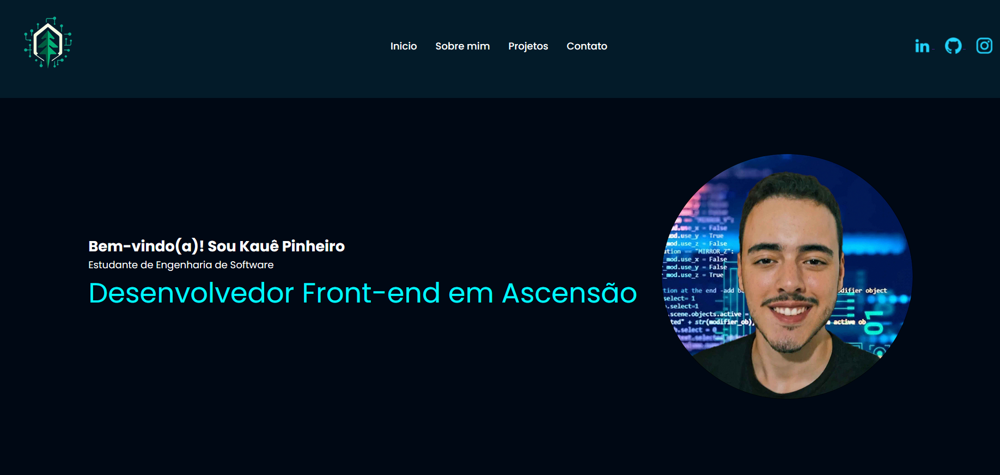

Portfólio Pessoal
Este projeto consiste na criação de um site de portfólio pessoal, desenvolvido como atividade prática para a disciplina de Programação Front-End.
 Clique aqui para conhecer o projeto


Este projeto consiste na criação de um site de portfólio pessoal, desenvolvido como atividade prática para a disciplina de Programação Front-End.